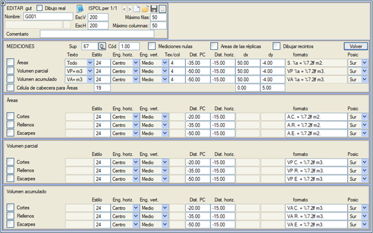
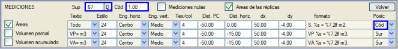
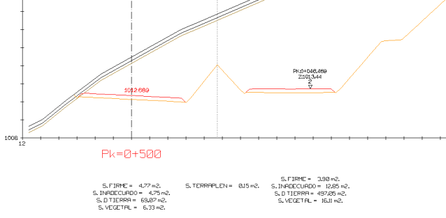
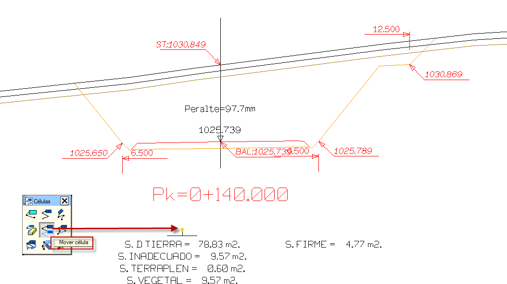

| |
|
ENKESİT PAFTALARI İÇİN ŞABLONLAR: METRAJLAR
|
Buradan, her enkesitte hangi metrajların gösterileceği belirtilir: alanlar, ara hacim ve toplam hacim. 
Bu metrajların yanı sıra, her biri için bazı alt bölümleri de gösterebiliriz:
Metin açılır menüsü içinde, önceden tanımlanmış üç format seçeneği ve dördüncü bir özelleştirilebilir seçenek bulunur:
Metin/sütun verisi, izin verilen sütun başına maksimum etiket satırı sayısını belirtir. Tüm bu sütunlar, Karş.Düz.Mes.'de belirtilen karşılaştırma düzlemine olan mesafeye ve Yatay Mesafe'de belirtilen bir yatay ötelemeye yerleştirilecektir. Diğer yandan, veri sütunları birbirinden dx değeri kadar uzakta olacak ve satırlar dy kadar ayrılacaktır. Ara hacim ve toplam hacim gösterimi, metin formatının iki seçenek sunması dışında (biri Tümü'ne benzer önceden tanımlanmış ve diğeri özelleştirilmiş) tam olarak aynı şekilde çalışır. Metrajların konumu ile ilgili olarak, bunları enkesitin altında ve ortalanmış (Güney), sol altta (GB), sol üstte (KB) gösterme veya konumu bir yüzeyin (Yüzey) bir tarafının (sağ veya sol) bir koduna (Kod) göre referanslama imkanı sunulur. Sıfır Metrajlar: Sıfır metrajları yazdırma imkanı. Bu durumda, adı <> karakterleri arasında olanlar hariç, .dar tablosundaki tüm metrajlar yazdırılır. Branş Ekle (yeni yüzeyler) seçeneğiyle elde edilen enkesitler olması durumunda, ana güzergaha eşlik eden o veya o diğer güzergahların yüzeylerine replikalar (branş yüzeyleri) diyoruz. Branş yüzeylerinin alanları kutucuğunu etkinleştirerek bu branşların yüzey alanlarını enkesitlerimizde etiketleyebiliriz. Etiketleme için referans, yüzey ve koda göre olacak veya varsayılan olarak Güney konumunda olacaktır. Ayrıca, kesişim birleşim yerleri olan ve güzergah sembolü taşımayan Branş Ekle güzergahları da dikkate alınır. (Daha önce bu sembol zorunluydu ve sadece normal güzergahlarda görünür, kesişimlerde görünmezdi). Alanları Çiz kutucuğu, her metraj için kapalı bir alan oluşturur. Çizgi, .dar tablosundaki metraj numarasıyla eşleşen modele dahil edilir. 

Alanlar için Başlık Hücresi: Bu seçenekle, güzergahın ve her bir branşın Alanları için bir başlık hücresi eklenebilir, böylece çizimi daha kolay düzenlemek, aynı güzergahın tüm alanlarını enkesitte birlikte hareket ettirmek, hücrenin bir noktasını sürükleyerek mümkün olur.  |